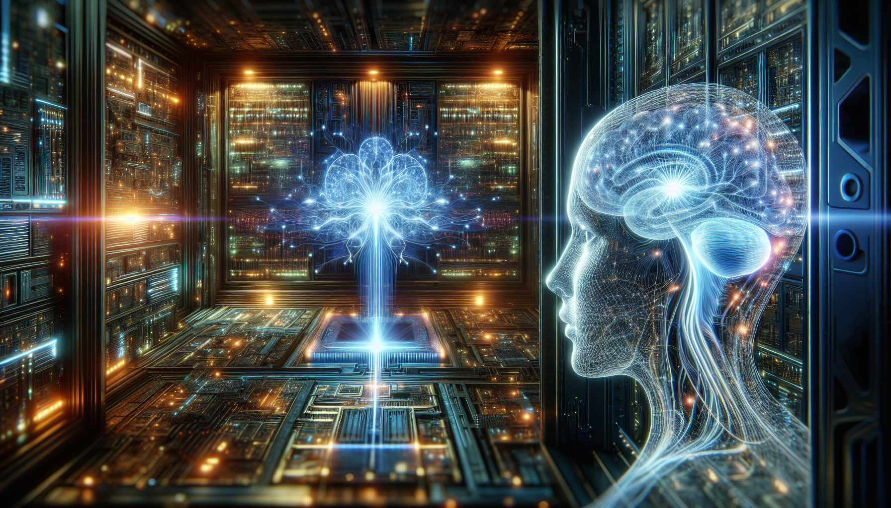

Python and the Future of AI
Python has quickly become one of the most popular languages in the world of AI and machine learning. Its easy-to-learn syntax and powerful libraries make it the perfect tool for developing and implementing cutting-edge AI algorithms. With the rise of big data and the increasing demand for AI solutions, Python is becoming a crucial skill for anyone interested in this rapidly growing field.
One of the key strengths of Python is its flexibility and versatility. It allows developers to quickly prototype and test new ideas, making it ideal for the fast-paced world of AI. Its extensive libraries, such as TensorFlow and PyTorch, provide powerful tools for data analysis and machine learning, making it easier for developers to build and train AI models. With its ability to handle large datasets and its compatibility with other languages, Python is poised to play a major role in the future of AI and machine learning.
As AI continues to advance and become more integrated into our daily lives, the demand for Python skills will only increase. From creating chatbots and virtual assistants to developing autonomous vehicles and predictive analytics, Python will be at the forefront of driving innovation in AI. As a Python student, I am excited to be a part of this ever-evolving field and look forward to seeing what the future holds for